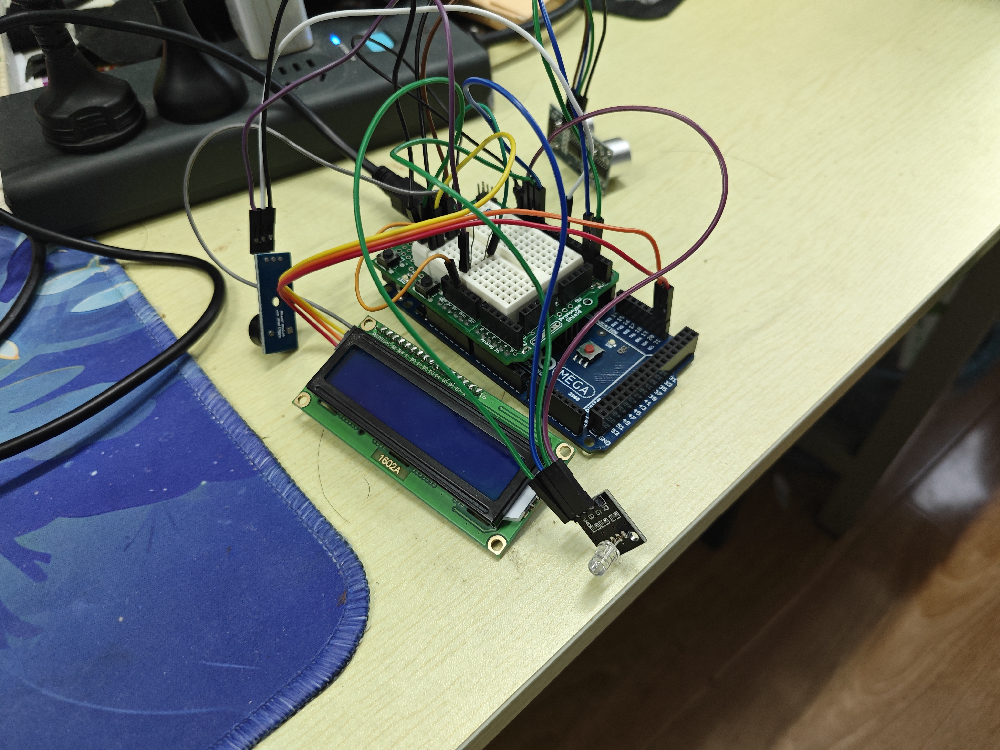

📸 项目实物图

硬件组成：Arduino Mega 开发板 + HC‑SR04 超声波传感器 + LCD1602 I²C 显示屏 + 蜂鸣器 + RGBLED 彩灯
🧩 核心功能特点
- 精准测距 – 利用超声波回波时间差，结合声速温度补偿公式，实时计算障碍物距离（cm）。
- 分级声光报警 – 距离小于 20 cm 时，蜂鸣器鸣叫且 LED 闪烁；距离越近，报警频率越高（延迟时间 = 距离 × 20 ms）。
- LCD 实时显示 – 通过 I²C 接口驱动 20×4 液晶屏，清晰打印当前距离数值。
- 物联网数据上传 – 通过 Python + paho‑MQTT 将串口距离数据发布至云端服务器（如 EMQX），模拟智能驾驶汽车“端‑云”通信。
- 教学友好设计 – 鼓励学生使用 AI 大模型辅助生成 MQTT 代码，培养数字化学习与创新思维。
⚙️ Arduino 核心代码（测距与报警逻辑）
#include <LiquidCrystal_I2C.h>
#define I2C_ADDR 0x27
#define LCD_COLUMNS 20
#define LCD_LINES 4
LiquidCrystal_I2C lcd(I2C_ADDR, LCD_COLUMNS, LCD_LINES);
void setup() {
lcd.init();
lcd.backlight();
Serial.begin(9600);
pinMode(7, OUTPUT); // 蜂鸣器
pinMode(13, OUTPUT); // RGBLED 信号
pinMode(3, OUTPUT); // Trig
pinMode(2, INPUT); // Echo
}
void loop() {
float celsius = 25; // 默认室温
float speed = 0.033145 * sqrt((273.15 + celsius) / 273.15); // cm/μs
digitalWrite(3, HIGH);
delayMicroseconds(10);
digitalWrite(3, LOW);
int duration = pulseIn(2, HIGH);
float distance = (duration * speed) / 2;
Serial.print("Distance: ");
Serial.print(distance);
Serial.println(" cm");
// 距离小于 20 cm 触发报警，频率随距离减小而加快
if (distance < 20) {
digitalWrite(13, HIGH);
tone(7, 261); // 发声音调 261Hz
int times = distance * 20; // 延迟时间与距离挂钩
delay(times);
digitalWrite(13, LOW);
noTone(7);
}
lcd.setCursor(0, 0);
lcd.print("Distance:");
lcd.setCursor(10, 0);
lcd.print(distance);
lcd.print(" cm ");
delay(10);
}
💡 完整项目还包括 Python MQTT 客户端代码，用于将数据发送至云端，详见 GitHub 仓库。
📚 教学实验设计
- 适用对象：高中物联网课程，具备 Arduino / Python 基础的学生。
- 分组协作：硬件搭建与代码实现分工合作，完成后互相讲解原理。
- AI 辅助学习：利用大模型生成 MQTT 通信模板，引导学生理解并修改，锻炼自学能力。
- 跨学科融合：超声波测距公式（物理）与温度补偿计算，体现 STEM 综合素养。